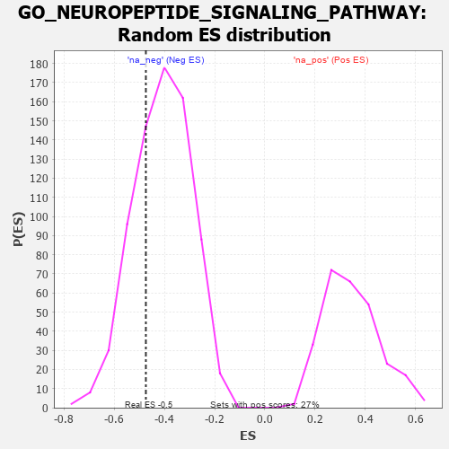

| | | Dataset | 7d |
| Phenotype | NoPhenotypeAvailable |
| Upregulated in class | na_neg |
| GeneSet | GO_NEUROPEPTIDE_SIGNALING_PATHWAY |
| Enrichment Score (ES) | -0.47400907 |
| Normalized Enrichment Score (NES) | -1.161401 |
| Nominal p-value | 0.2894376 |
| FDR q-value | 0.6778283 |
| FWER p-Value | 1.0 |
Table: GSEA Results Summary
 Fig 1: Enrichment plot: GO_NEUROPEPTIDE_SIGNALING_PATHWAY
Fig 1: Enrichment plot: GO_NEUROPEPTIDE_SIGNALING_PATHWAY
Profile of the Running ES Score & Positions of GeneSet Members on the Rank Ordered List
| PROBE | GENE SYMBOL | GENE_TITLE | RANK IN GENE LIST | RANK METRIC SCORE | RUNNING ES | CORE ENRICHMENT | | 1 | ECEL1 | | | 127 | 1.412 | 0.1176 | No |
| 2 | GLRA2 | | | 1892 | 0.321 | -0.0738 | No |
| 3 | PTH2 | | | 2860 | 0.173 | -0.1790 | No |
| 4 | QRFPR | | | 3789 | 0.029 | -0.2930 | No |
| 5 | GLRA1 | | | 3957 | 0.001 | -0.3138 | No |
| 6 | MCHR2 | | | 4199 | -0.041 | -0.3402 | No |
| 7 | GPR83 | | | 4471 | -0.088 | -0.3659 | No |
| 8 | NMUR2 | | | 4646 | -0.127 | -0.3758 | No |
| 9 | NPY6R | | | 4866 | -0.170 | -0.3872 | No |
| 10 | NPY2R | | | 5331 | -0.281 | -0.4190 | No |
| 11 | PRLHR | | | 5705 | -0.377 | -0.4302 | Yes |
| 12 | GLRB | | | 5776 | -0.398 | -0.4013 | Yes |
| 13 | GALR2 | | | 6355 | -0.599 | -0.4174 | Yes |
| 14 | GLRA3 | | | 6469 | -0.648 | -0.3702 | Yes |
| 15 | NPY1R | | | 6732 | -0.776 | -0.3298 | Yes |
| 16 | NMUR1 | | | 6821 | -0.828 | -0.2626 | Yes |
| 17 | NPY | | | 7465 | -1.356 | -0.2152 | Yes |
| 18 | NPSR1 | | | 7913 | -2.947 | 0.0073 | Yes |
Table: GSEA details [plain text format]

Fig 2: GO_NEUROPEPTIDE_SIGNALING_PATHWAY: Random ES distribution
Gene set null distribution of ES for GO_NEUROPEPTIDE_SIGNALING_PATHWAY